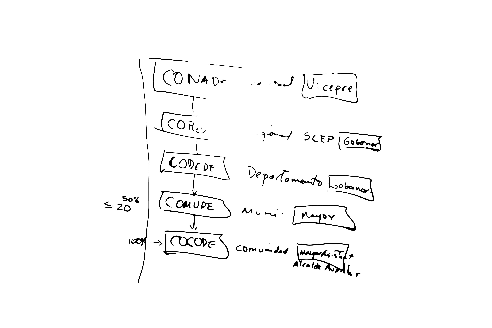
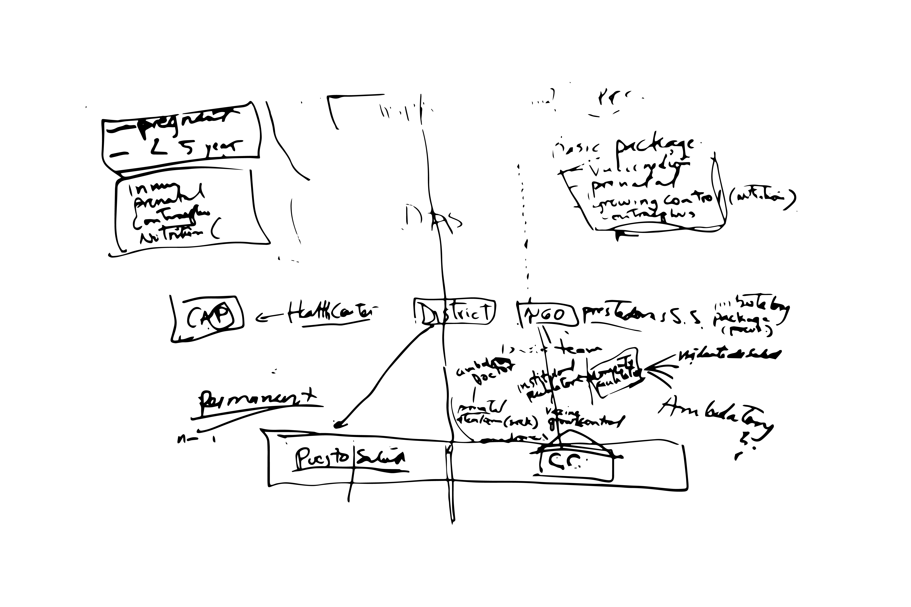
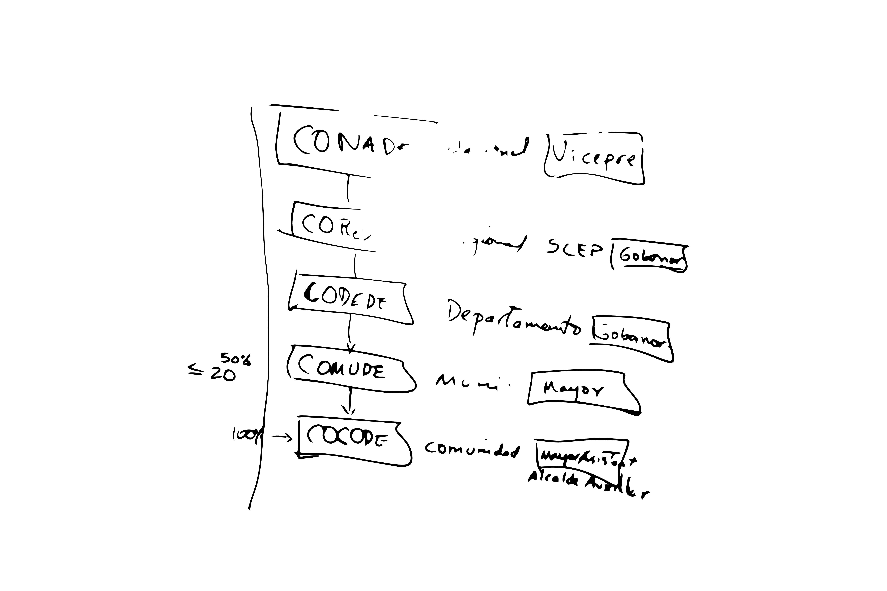
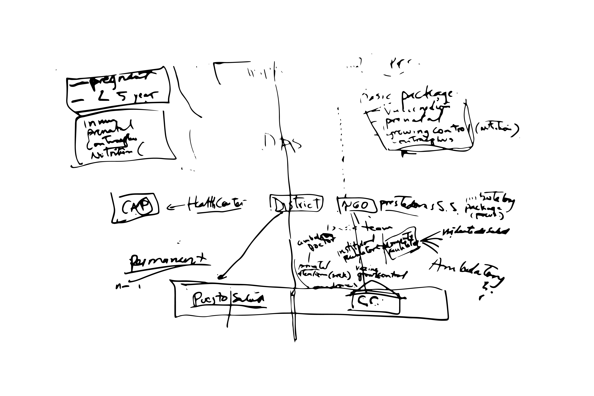

mit
gov
/
lab
Bridging the gap
between citizens
and the government.

 



A growing group of technology companies is working with cities to create alternative opportunities for citizens to participate in government online. Our experiment revealed that online feedback is often longer and more detailed than feedback collected through Town Hall Meetings, addresses different issues, and is percieved as more novel by city government officials.
MIT GOV/LAB and the local Liberian NGO Parley have teamed up to create a web portal, based in Monrovia, which will gather data directly from citizens about their needs and requests for assistance from government authorities, and these requests will be sent to various government agencies and NGOs. In addition to facilitating requests for assistance, the website will make publicly available heat maps and interactive graphics, which allow users to visualize the dispersion of the crisis.